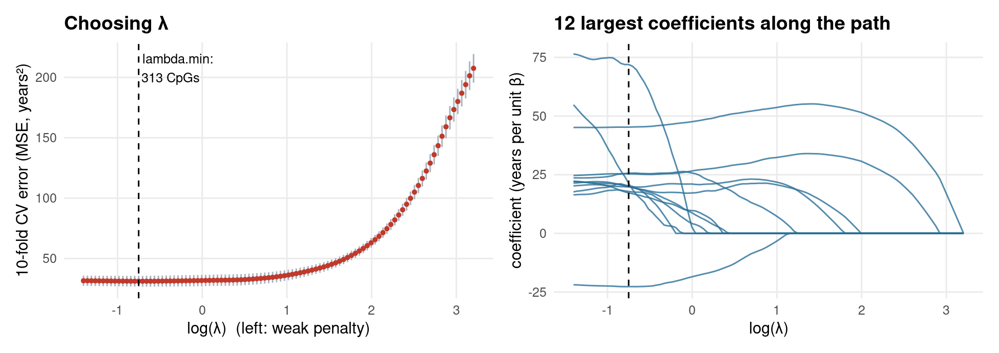

Exercise: Epigenetic clocks and biomarkers
Goal
After this exercise you will be able to:
- Predict an age by hand from clock coefficients, including Horvath’s age transformation.
- Fit your own epigenetic clock with the elastic net (glmnet) on public blood methylation data, choosing λ by cross-validation.
- Evaluate it honestly: training vs held-out error, an external data set, and the effect of leakage.
- Apply Horvath’s published clock and compute age acceleration as a residual.
- Deconvolve a methylation profile against a reference atlas, as used for cell-free DNA, and compute a positive predictive value for a screening test.
Background
The elastic net. For people \(i\) with age \(y_i\) and CpG β values \(x_{ij}\), glmnet finds the intercept \(a\) and coefficients \(b_j\) that minimise
\[ \frac{1}{2n}\sum_i \Big(y_i - a - \sum_j b_j x_{ij}\Big)^2 + \lambda \Big[ \alpha \sum_j |b_j| + \frac{1-\alpha}{2} \sum_j b_j^2 \Big]. \]
α = 1 is the lasso (many coefficients exactly 0), α = 0 ridge regression (all shrunk, none 0). Clocks use α = 0.5. λ is chosen by k-fold cross-validation on the training data; the test data are used once, at the end.
Prediction is then a weighted sum: predicted age \(= a + \sum_j b_j \beta_j\).
Horvath’s transformation. Horvath’s clock predicts \(F(\text{age})\) with \(F(a) = \log(a + 1) - \log(21)\) for \(a \le 20\) and \(F(a) = (a - 20)/21\) for \(a > 20\). The inverse: if the linear predictor \(z < 0\), age \(= 21 e^{z} - 1\); otherwise age \(= 21 z + 20\).
Age acceleration is the residual of DNAm age regressed on chronological age in the data at hand: \(\text{AA}_i = \text{DNAmAge}_i - (c_0 + c_1 \cdot \text{age}_i)\).
Deconvolution. A sample’s β values are modelled as a non-negative mixture of reference profiles: \(y \approx R w\), \(w \ge 0\), solved by non-negative least squares (nnls), as in the Houseman method of Methylation arrays.
Screening. Positive predictive value (PPV) = true positives / all positives = \(\dfrac{\text{sens} \cdot p}{\text{sens} \cdot p + (1 - \text{spec})(1 - p)}\) for prevalence \(p\).
Data
From data/prepare-meth2.sh clocks and data/prepare-meth2.sh arrays:
mkdir -p ~/epi/clocks && cd ~/epi/clocks
D=/path/to/course/data # where the course data are| file | what |
|---|---|
hannum_gse40279_beta_subset.tsv.gz |
Hannum et al. 2013 (GEO GSE40279): β values of 656 whole-blood samples (450k), 26 127 CpGs: the 20 000 most variable CpGs (chosen without looking at age), plus the CpGs of the Horvath clock and of the Moss atlas, plus ELOVL2 cg16867657 and FHL2 cg06639320. Columns: cpg, then one column per GEO sample |
hannum_gse40279_samples.tsv |
sample table: GEO accession, age, sex, ethnicity, recruitment site, plate |
horvath2013_coefficients.csv |
Horvath 2013, Additional file 3: intercept and 353 CpG coefficients (column CoefficientTraining) |
moss2018_reference_atlas.csv |
Moss et al. 2018: β of marker CpGs in 25 cell types and tissues (meth_atlas) |
gse42861_idat/, gse42861_samples.tsv |
the 151 rheumatoid arthritis / control arrays of Methylation arrays: our external test set |
Shortcuts, said plainly. The Hannum β values are the authors’ processed values (not re-normalised from IDATs). We use a CpG subset to keep memory small; a real clock would start from all ~470 000 CpGs. The subset contains the Horvath CpGs, which Horvath selected partly using these very samples: a mild form of leakage for any clock trained on the subset, which is one reason to test on GSE42861 as well.
You need R packages data.table, glmnet, nnls, ggplot2, and (for R6–R7) minfi with IlluminaHumanMethylation450kmanifest. The R part takes about 10 minutes, mostly reading IDATs in R6, and needs about 8 GB of memory.
By hand
Do these on paper.
B1. Predict an age. A (toy) clock has intercept 18 and three CpGs:
| CpG | coefficient | person P: β | person Q: β |
|---|---|---|---|
| ELOVL2 | 60 | 0.70 | 0.55 |
| FHL2 | 40 | 0.50 | 0.40 |
| cgX | −30 | 0.40 | 0.60 |
Compute the predicted ages of P and Q.
An array batch effect adds +0.02 to every β. How much does it change every predicted age? What does that mean for comparing people measured in different batches?
B2. Horvath’s transformation. (a) Compute F(5) and F(60). (b) The linear predictor for a sample is z = −1.2; what is the predicted age? And for z = 2.0? (c) Why transform age at all?
B3. Which penalty? Three models were fitted on the same 26 000 CpGs. Model 1 has 26 000 non-zero coefficients, all small. Model 2 has 40 non-zero coefficients. Model 3 has 313. Which could be ridge, lasso and elastic net? Why might the lasso keep only one CpG of a group of five neighbouring, highly correlated CpGs, and why does the elastic net tend to keep several?
B4. Spot the leakage. Which of these procedures give an over-optimistic test error? Explain.
Select the 1 000 CpGs most correlated with age in all 656 samples; then split 70/30 and fit an elastic net on the training part.
Split 70/30; normalise all 656 arrays together with quantile normalisation; fit on training, test on test.
Split 70/30; within the training set, select CpGs and choose λ by cross-validation; test once.
Fit five different models, evaluate each on the test set, and report the best test error.
The data contain 30 pairs of twins; split people (not pairs) at random.
B5. Read the figures. Use the lecture figures:


In the CV curve, why does the error rise to the right? Why is it flat at the left? Which λ would you choose and why?
In the right panel of the second figure, why does the training error keep falling as CpGs are added, and why does the test error go up after about 100 CpGs?
B6. Age acceleration. In a cohort, the line of DNAm age on age is DNAm age = 10 + 0.85 × age.
| person | age | DNAm age |
|---|---|---|
| R | 25 | 33 |
| S | 60 | 59 |
| T | 80 | 75 |
Compute DNAm age − age and the age acceleration (residual) for each.
A study compares a group with mean age 30 with a group with mean age 70 using DNAm age − age and finds the young group “older”. Explain.
B7. Deconvolution by hand. Two CpGs and two cell types:
| neutrophils | lymphocytes | sample | |
|---|---|---|---|
| CpG 1 | 0.9 | 0.1 | 0.66 |
| CpG 2 | 0.2 | 0.8 | 0.38 |
Assume the fractions are w and 1 − w. Solve for w from CpG 1, and check CpG 2.
A third cell type (liver) has β = 0.1 at CpG 1 and 0.1 at CpG 2. Could a 5% liver contribution be detected from these two CpGs? What kind of CpGs would you add?
B8. Screening arithmetic. A cfDNA cancer test has 99.3% specificity and 40% sensitivity for early cancers. 100 000 people aged 50–75 are screened; 0.8% have a (mostly early) cancer.
How many true positives and false positives? What is the PPV?
What happens to the PPV if the test is used in a high-risk group with 5% prevalence?
The test also predicts the tissue of origin correctly in 90% of true positives. Why does that matter for the follow-up of a positive result?
B9. Judge the claim. “In our 12-month study, 18 people taking supplement X became 1.8 years younger by DNAm PhenoAge (p = 0.04); four other clocks showed no change.” List at least four problems, and design a better study.
On the command line
C1 — Look at the data
zcat $D/hannum_gse40279_beta_subset.tsv.gz | head -3 | cut -f 1-5
zcat $D/hannum_gse40279_beta_subset.tsv.gz | tail -n +2 | wc -l
head -3 $D/hannum_gse40279_samples.tsv
cut -f 3 $D/hannum_gse40279_samples.tsv | tail -n +2 | sort -n | awk '{ a[NR] = $1 } END { print "n", NR, "min", a[1], "median", a[int((NR + 1) / 2)], "max", a[NR] }'
cut -f 5 $D/hannum_gse40279_samples.tsv | tail -n +2 | sort | uniq -c
sed -n '1,5p' $D/horvath2013_coefficients.csv | cut -d, -f 1-3
grep -c '^cg' $D/horvath2013_coefficients.csvHow many CpGs and samples? What are the age range and the median age?
Which ethnic groups are in the Hannum data? Why could that matter when the clock is applied to a Swedish cohort?
What is the intercept of Horvath’s clock, and how many CpGs does it have?
Explore: fit a clock, overfit it, leak into it
The demo fits an elastic net, as in R2, to simulated data: people aged 20–80, P candidate CpGs measured with noise, of which a chosen number change linearly with age (each by 0.008–0.03 in β per decade) and the rest are pure noise. The model is fitted on N training people, along a grid of λ values (coordinate descent on standardised CpGs, as glmnet does), and evaluated on 200 test people it never saw. (a) Predicted against true age at the chosen λ: test people filled, training people as faint circles, with the median absolute errors and the number of CpGs the model uses. (b) Training and test error for every λ, the number of CpGs used at each λ (along the top), and the error of simply guessing the median training age. α moves from ridge (0) to lasso (1). The buttons can first keep only the 50 CpGs most correlated with age, chosen either in the training people or in all people (the leaky procedure of B4(a) and R5).
E1. (links to B5, R3) With the defaults (N = 100, P = 1 000, 20 age CpGs, α = 0.5, λ = 1), read the training and test error and the number of CpGs used. Move λ to the weakest penalty (0.010) and to the strongest (100). What happens to the training error, the test error and the number of CpGs? Why does the strongest penalty give the same error as guessing the median? At which λ is the test error lowest, and why should you not choose λ this way in a real analysis?
E2. (links to R4) At λ = 0.010, compare P = 20 with P = 2 000 candidate CpGs (still 20 age CpGs). Then, with P = 2 000, set N = 400 and N = 20, and read the best test error in (b) for each. What do P ≫ N and the training error have to do with each other?
E3. (links to B3) Back to N = 100, P = 1 000. Set α = 1 (lasso) and find the λ with the lowest test error: how many CpGs does the model use, and how many are age CpGs? Then set α = 0 (ridge): how many CpGs are used at any λ, and what is the best test error now?
E4. (links to B4, R5) Set α = 0.5, λ = 1, and 0 age CpGs: nothing in the data is related to age. Compare the test error and test r for no selection, in training people and in all people (leaky), and the best test error in (b) for each. Which procedure claims to predict age, and why? Finally set 20 age CpGs again and compare the leaky and the honest selection.
E1. At λ = 1: test error 6.0 years, training error 2.7 years, test r = 0.92, 145 CpGs used (18 of the 20 age CpGs and 127 noise CpGs). At λ = 0.010: training error 0.0, test error 5.8, 262 CpGs: with 1 000 CpGs and 100 people the model can fit the training ages exactly, so the training error says nothing about new people. At λ = 100: 0 CpGs, training 14.7 and test 15.1 years: every coefficient is zero, the model predicts the mean training age for everyone, which is as good as guessing the median (15.1). The test error is lowest, 5.7 years at λ = 0.32. Choosing λ by the test error uses the test people to tune the model, so 5.7 is too optimistic: λ must be chosen by cross-validation within the training set (R2), and the test set used once at the end.
E2. At λ = 0.010, P = 20: training 4.4, test 4.5 years: with 20 CpGs and 100 people the model cannot memorise, and training error is honest. P = 2 000: training 0.0, test 6.1: with far more CpGs than people, some combination of noise CpGs always fits the training ages exactly. N = 400 (P = 2 000): best test error 4.1 (at λ = 1, with all 20 age CpGs found); N = 20: best test error 12.2, hardly better than the 14.7-year guess (only 11 of the 20 age CpGs are found). When P ≫ N a zero training error is guaranteed and meaningless; only held-out error and more training samples help. Unpenalised regression on many CpGs (R4) is the extreme case.
E3. α = 1 (lasso): the best test error is 4.7 years at λ = 1.5, with 26 CpGs, of which 14 are age CpGs: the lasso keeps few CpGs and drops most of the noise. α = 0 (ridge): all 1 000 CpGs have non-zero coefficients at every λ, and the best test error is only 9.0 years: ridge shrinks but never removes the 980 noise CpGs, whose small coefficients add up to noise in the prediction. The elastic net (α = 0.5) sits in between (5.7 years, about 200 CpGs). With correlated CpGs (not simulated here) the ridge part of the elastic net would also keep groups of neighbours together (B3).
E4. With 0 age CpGs at λ = 1: no selection gives test error 16.1 years, r = 0.05; selection in the training people 16.1, r = 0.06: both are as bad as the 15.1-year guess, which is correct, because there is nothing to find. The leaky selection gives test error 11.5 years and r = 0.53 (best 10.1 in (b)): it seems to predict age from pure noise. The 50 CpGs were chosen because they happen to correlate with age in the test people too, so the test set is no longer independent of the model. With 20 age CpGs the leak still flatters the model: 4.2 years (leaky) against 5.6 (honest). Every step that looks at the outcome, including feature selection and choosing λ, must be done inside the training data.
In R
suppressPackageStartupMessages({ library(data.table); library(glmnet); library(nnls); library(ggplot2) })
D <- "/path/to/course/data"
b <- fread(file.path(D, "hannum_gse40279_beta_subset.tsv.gz"))
s <- fread(file.path(D, "hannum_gse40279_samples.tsv"))
X <- t(as.matrix(b[, -1])); colnames(X) <- b$cpg # samples x CpGs
stopifnot(identical(rownames(X), s$gsm))
age <- s$age
dim(X)R1 — Single CpGs
r <- cor(X, age)[, 1]
r[c("cg16867657", "cg06639320")] # ELOVL2, FHL2
head(sort(r), 3); head(sort(r, decreasing = TRUE), 3)
sum(abs(r) > 0.5); sum(abs(r) > 0.3)
fit1 <- lm(age ~ X[, "cg16867657"])
summary(fit1)$r.squared; median(abs(residuals(fit1)))
ggplot(data.frame(age, elovl2 = X[, "cg16867657"]), aes(age, elovl2)) + geom_point(alpha = 0.4) + geom_smooth(method = "lm")How well does ELOVL2 alone predict age (R², median absolute error)?
How many CpGs have |r| > 0.5?
R2 — Train/test split and an elastic net
set.seed(42)
test <- sample(nrow(X), round(0.3 * nrow(X)))
train <- setdiff(seq_len(nrow(X)), test)
cv <- cv.glmnet(X[train, ], age[train], alpha = 0.5, nfolds = 10)
plot(cv)
cv$lambda.min; cv$lambda.1se
cf <- coef(cv, s = "lambda.min")[, 1]
sum(cf[-1] != 0); sum(coef(cv, s = "lambda.1se")[-1] != 0)
head(sort(abs(cf[-1]), decreasing = TRUE), 5)How many CpGs does the model use at
lambda.minand atlambda.1se?Is ELOVL2 among the selected CpGs? What is its coefficient, in years per unit β?
R3 — Training and test error
mae <- function(p, a) median(abs(p - a))
p_train <- predict(cv, X[train, ], s = "lambda.min")[, 1]
p_test <- predict(cv, X[test, ], s = "lambda.min")[, 1]
c(train = mae(p_train, age[train]), test = mae(p_test, age[test]))
c(train = cor(p_train, age[train]), test = cor(p_test, age[test]))
p1se <- predict(cv, X[test, ], s = "lambda.1se")[, 1]; mae(p1se, age[test])
ggplot(data.frame(age = age[test], pred = p_test), aes(age, pred)) + geom_point() + geom_abline(linetype = 2)Report training and test errors. Why do they differ?
How much worse is the 36-CpG model (
lambda.1se) on the test set?
R4 — Overfitting without a penalty
rt <- cor(X[train, ], age[train])[, 1]
ols <- function(k, sel = rt) {
g <- names(sort(abs(sel), decreasing = TRUE))[1:k]
f <- lm.fit(cbind(1, X[train, g]), age[train]); bb <- f$coefficients; bb[is.na(bb)] <- 0
c(k = k, train = mae(cbind(1, X[train, g]) %*% bb, age[train]), test = mae(cbind(1, X[test, g]) %*% bb, age[test]))
}
t(sapply(c(10, 50, 100, 200, 300, 400, 440), ols))- At which k is the test error lowest? What happens as k approaches the number of training samples (459)?
R5 — Leakage
Pure noise: 5 000 random “CpGs” with no relation to age. Select the 100 most age-correlated ones either using all samples (leaky) or using the training samples only (honest), then fit an elastic net on the training set and predict the test set.
set.seed(1)
noise <- matrix(runif(nrow(X) * 5000), nrow(X))
pick <- function(r, k = 100) order(abs(r), decreasing = TRUE)[1:k]
leaky <- pick(cor(noise, age)[, 1]) # uses the test samples' ages!
honest <- pick(cor(noise[train, ], age[train])[, 1])
fit_noise <- function(g) {
set.seed(2); f <- cv.glmnet(noise[train, g], age[train], alpha = 0.5)
p <- predict(f, noise[test, g], s = "lambda.min")[, 1]
c(test_mae = mae(p, age[test]), test_r = cor(p, age[test]))
}
rbind(leaky = fit_noise(leaky), honest = fit_noise(honest))
mae(rep(median(age[train]), length(test)), age[test]) # baseline: always predict the median ageWhat test error and correlation does the leaky procedure report? Compare with the baseline of predicting the median age.
What does the honest procedure give, and why?
Our data file contains Horvath’s 353 CpGs, which Horvath selected using (among others) these Hannum samples. Is that the same kind of leakage? How serious is it for our clock, and how do we check?
R6 — Horvath’s clock and an external test set
hc <- fread(file.path(D, "horvath2013_coefficients.csv"), skip = 2)[, .(cpg = CpGmarker, w = CoefficientTraining)]
h0 <- hc[cpg == "(Intercept)", w]; hc <- hc[cpg != "(Intercept)"]
anti <- function(z) ifelse(z < 0, 21 * exp(z) - 1, 21 * z + 20)
horvath <- function(B) anti(h0 + B[, hc$cpg, drop = FALSE] %*% hc$w)[, 1]
h_hannum <- horvath(X)
c(r = cor(h_hannum, age), mae = mae(h_hannum, age), offset = median(h_hannum - age))
suppressPackageStartupMessages(library(minfi))
g <- fread(file.path(D, "gse42861_samples.tsv"))
g$Basename <- file.path(D, "gse42861_idat", g$basename)
rg <- read.metharray.exp(targets = as.data.frame(g)) # about 4 minutes
bg <- getBeta(preprocessNoob(rg)); rm(rg); invisible(gc())
Xg <- t(bg[colnames(X), ])
p_ext <- predict(cv, Xg, s = "lambda.min")[, 1]
h_ext <- horvath(t(bg[hc$cpg, ]))
rbind(ours = c(r = cor(p_ext, g$age), mae = mae(p_ext, g$age), offset = median(p_ext - g$age)),
horvath = c(r = cor(h_ext, g$age), mae = mae(h_ext, g$age), offset = median(h_ext - g$age)))Why is the Horvath result on the Hannum data not a fair test? (Look at Additional file 1 of Horvath 2013.)
How do the two clocks do on GSE42861? What is the median offset, and what could cause it?
R7 — Age acceleration
fit <- lm(p_ext ~ g$age)
coef(fit)
g$acc <- residuals(fit)
g$diff <- p_ext - g$age
t.test(acc ~ status, data = g)$p.value
aggregate(cbind(acc, diff) ~ status, data = g, FUN = mean)
aggregate(acc ~ smoking, data = g, FUN = mean)
cor(g$diff, g$age); cor(g$acc, g$age)- What is the slope of DNAm age on age? (b) Do RA patients have accelerated epigenetic ages? (c) Why is the raw difference correlated with age, and the residual not?
R8 — Deconvolution with a methylation atlas
atl <- fread(file.path(D, "moss2018_reference_atlas.csv"))
atl <- atl[!duplicated(CpGs)] # markers chosen for two cell types appear twice
R <- as.matrix(atl[, -1]); rownames(R) <- atl$CpGs
common <- intersect(rownames(R), rownames(bg)); R <- R[common, ]
length(common); ncol(R)
deconv <- function(y) { f <- nnls(R, y)$x; names(f) <- colnames(R); f / sum(f) }
W <- t(apply(bg[common, ], 2, deconv))
round(sort(colMeans(W), decreasing = TRUE)[1:8], 3)
set.seed(7)
sim <- sapply(c(0, 0.01, 0.05, 0.1), function(f) {
y <- (1 - f) * bg[common, 1] + f * R[, "Hepatocytes"] + rnorm(length(common), 0, 0.03)
deconv(pmin(pmax(y, 0), 1))["Hepatocytes"] })
round(sim, 3)What does whole blood consist of according to the atlas? Compare with the Houseman estimates of Methylation arrays (granulocytes ~64%).
How well is added hepatocyte DNA recovered? What would limit this in real plasma cfDNA?
Hints
glmnet vignette: cv.glmnet, lambda.min, lambda.1se, coef, predict. Zou & Hastie 2005, Regularization and variable selection via the elastic net. coef(cv) returns a sparse matrix; the first row is the intercept.
A model with as many parameters as samples can fit the training data exactly. Leakage = any information from the test samples used before the test (selection, normalisation, model choice). Related individuals (twins) or replicates of one sample in both sets also leak. Machine learning from scratch treats this in depth.
Horvath 2013, DNA methylation age of human tissues and cell types: Additional file 2 (the transformation, section “Age transformation”), Additional file 1 (which data sets were training and test), Additional file 3 (coefficients). \(\log\) is the natural logarithm.
Residuals from lm(DNAmAge ~ age); residuals. A slope below 1 means the clock overestimates the young and underestimates the old.
minfi user’s guide: read.metharray.exp, preprocessNoob, getBeta. The Basename column is the path without _Grn.idat.gz.
nnls::nnls solves \(\min \|Ax - b\|\) with \(x \ge 0\). Moss et al. 2018, the atlas paper. For B8 draw a 2×2 table: cancer yes/no × test positive/negative.
Solutions
B1. (a) P: 18 + 60·0.70 + 40·0.50 − 30·0.40 = 18 + 42 + 20 − 12 = 68. Q: 18 + 33 + 16 − 18 = 49. (b) +0.02 × (60 + 40 − 30) = +1.4 years for everyone. A batch effect shifts all predictions of that batch; comparing people across batches mixes biology with batch. Real clocks have hundreds of coefficients of both signs, but the sum of their coefficients is rarely zero, so global shifts in β move DNAm age.
B2. (a) F(5) = log 6 − log 21 = 1.792 − 3.045 = −1.25; F(60) = 40/21 = 1.90. (b) z = −1.2: 21·e^{−1.2} − 1 = 21·0.301 − 1 = 5.3 years; z = 2.0: 21·2 + 20 = 62 years. (c) Methylation changes much faster in childhood than in adulthood; on the log scale for children the relation with CpGs is closer to linear, so one linear model fits the whole lifespan.
B3. Model 1: ridge (no zeros). Model 2: lasso (most sparse). Model 3: elastic net (sparse, but keeps more correlated CpGs). The lasso penalty is indifferent between spreading a coefficient over five identical CpGs and putting it all on one, and the geometry of the L1 penalty makes the solution land on one; the L2 part of the elastic net prefers spreading the weight, so correlated CpGs enter together.
B4. Leaky: (a) selection uses the test samples’ ages; (d) the test set is used for model choice, so the reported error is the minimum of five noisy estimates; (e) twins share genotype and family environment, so a twin in the test set is partly “seen” through the co-twin in training: split by pair. (b) is a mild leak in principle (normalisation uses test arrays, though not their ages); most clock papers accept it, but the safest is to normalise each array on its own (noob) or to freeze the normalisation on the training set. (c) is correct.
B5. (a) To the right λ is large: few or no CpGs, the model is too simple (underfitting), error near the variance of age. To the left the penalty is weak: many CpGs, but cross-validation shows no further gain; the curve is flat because the extra CpGs have tiny coefficients. Choose lambda.min for the lowest CV error or lambda.1se (largest λ within one standard error) for a simpler model with similar error. (b) More parameters always fit the training data at least as well; beyond ~100 CpGs the extra parameters fit noise in the training samples, which does not generalise, so the test error rises (overfitting); near k = n the fit is exact and useless.
B6. (a) Fitted: R 10 + 21.25 = 31.25; S 61; T 78. Raw differences: R +8, S −1, T −5. Residuals: R +1.75, S −2, T −3. (b) With a slope below 1 the clock overestimates the young and underestimates the old, so DNAm age − age falls with age (here from +8 to −5) even for people who are not accelerated. The comparison confounds acceleration with age; use residuals (or include age in the model).
B7. (a) CpG 1: 0.9w + 0.1(1 − w) = 0.66 → 0.8w = 0.56 → w = 0.7. Check CpG 2: 0.2·0.7 + 0.8·0.3 = 0.14 + 0.24 = 0.38 ✓. (b) Liver at 5% changes CpG 1 by 0.05·(0.1 − 0.66) ≈ −0.03 and looks like a small shift towards lymphocytes; with two CpGs and three unknowns the system is not identifiable. Add CpGs where liver differs from all blood cells (e.g. unmethylated only in hepatocytes and methylated in all blood cells); many such markers make a small fraction detectable.
B8. (a) Cancers: 800; true positives 0.40·800 = 320; false positives 0.007·99 200 = 694; PPV = 320/1014 = 32%. Two out of three positives are false. (b) 5 000 cancers: TP 2 000; FP 0.007·95 000 = 665; PPV = 2000/2665 = 75%. (c) A positive test must be followed by imaging and biopsy; knowing where to look shortens and cheapens the work-up and reduces harm from searching the whole body.
B9. Problems: no control group (regression to the mean, seasonal effects); before and after samples probably in different array batches (offsets of years are common); technical noise of single-CpG clocks (replicates differ by years); multiple testing across five clocks (one p = 0.04 is expected by chance); small n; possible change in blood cell composition; a lower PhenoAge is a surrogate, not a health outcome. Better: randomised placebo-controlled, all samples (both time points, both arms) on the same arrays in random order, technical replicates, a pre-registered primary clock with high reliability (DunedinPACE or a PC clock), cell composition estimated and modelled, and clinical outcomes.
C1. (a) 26 127 CpGs (rows after the header) × 656 samples; age 19–101, median 65. (b) 426 “Caucasian - European” and 230 “Hispanic - Mexican”. Methylation at some CpGs differs between populations (partly through meQTLs), so a clock trained on one population can be offset in another. (c) Intercept 0.6955 (CoefficientTraining; the shrunk version is 0.8869); 353 CpGs.
R1. (a) ELOVL2 r = 0.86 (FHL2 0.75); alone it explains R² = 0.74 of the variance in age, with a median absolute error of 4.4 years. Most negative: cg10501210, r = −0.73. (b) 50 CpGs with |r| > 0.5, 470 with |r| > 0.3.
R2. (a) lambda.min = 0.472 with 313 CpGs; lambda.1se keeps 36. (b) Yes: ELOVL2 cg16867657 has the second-largest coefficient, about 45 years per unit β (0.1 more methylation adds 4.5 years); the largest is cg09541794 (72). lambda.1se = 2.52.
R3. (a) Training: median absolute error 1.23 years, r = 0.99; test: 3.71 years, r = 0.93. The model has partly fitted the noise of its training samples; only the test error estimates performance on new people. (b) The 36-CpG model has a test error of 4.4 years: 0.7 years worse, with a tenth of the CpGs.
R4. (a) The test error is lowest around k = 10–100 (3.7–3.9 years). At k = 400 the training error is 0.97 and the test error 8.3; at k = 440 the training error is 0.52 and the test error 17.9 years.
R5. (a) Leaky selection of 100 noise “CpGs”: test median error 8.1 years and r = 0.62, apparently much better than the baseline of predicting the median age (11 years), although the features contain no information about age. The selection used the test samples’ ages, so the chosen features happen to correlate with age in the test set. (b) Honest selection: test error 13.5 years and r = −0.11, worse than the baseline: the model fits noise in the training set, as it should. (c) Yes, in a milder form: Horvath used GSE40279 to choose his 353 CpGs, so they are slightly favoured on these samples. The effect is small for real age CpGs (age signal is strong and replicates), but it is why the external test on GSE42861 is the more trustworthy number (3.2 vs 3.7 years: no sign of optimism here).
R6. (a) GSE40279 (Hannum) was one of Horvath’s 39 training data sets (Additional file 1, row 3). Horvath on Hannum: r = 0.92, median error 3.9 years, median offset −2.3 years. (b) GSE42861: our clock r = 0.92, median error 3.2 years, offset +2.5; Horvath r = 0.87, error 4.3 years, offset +2.3. Different lab, normalisation (noob vs the authors’ processing; Horvath used a BMIQ variant), population (Swedish vs American), age range (22–69 vs 19–101). Horvath reported a median error of 3.8 years on this data set (it was one of his test sets) with his own normalisation.
R7. (a) Slope 0.90 (intercept about 7.9). (b) No: mean acceleration −0.03 (controls) and +0.03 (RA), p = 0.94. Current smokers +1.2 years vs never smokers 0.0 (not significant in this small sample). (c) Because the slope is below 1, DNAm age − age decreases with age; the residual is by construction uncorrelated with age.
R8. (a) 6 105 unique atlas CpGs on the 450k array, 25 cell types. Mean: neutrophils 0.61, CD8 T 0.12, CD4 T 0.07, erythrocyte progenitors 0.04, NK 0.04, monocytes 0.04, B cells 0.03, breast 0.02. Similar to the Houseman estimates (granulocytes ~0.64), but the split between CD4 and CD8 differs: estimates depend on the reference. A few percent go to tissues that cannot be in blood: the noise floor. (b) Estimates 0.000, 0.009, 0.050 and 0.098 for 0, 1, 5 and 10% added: recovered within a fraction of a percentage point. Real cfDNA: a few thousand genome copies per locus, so each CpG is measured with few reads (sampling noise far larger than SD 0.03); low tumour or tissue fractions; and the tissue may be missing from the atlas.
Where this leads
- Machine learning from scratch generalises training/test splits, cross-validation and overfitting, and adds classification (ROC and PR curves).
- What people try to predict, and how to tell if it works returns to age and tumour-type prediction from methylation, and to genomics-specific leakage.
- Epigenetics in disease and therapy covers methylation-based tumour classification.
- Methylation and chromatin from long reads: nanopore sequencing of cfDNA reads methylation and fragment patterns together.
Key papers (optional further reading)
Not required reading and not examined.
- Horvath 2013, Genome Biol. DNA methylation age of human tissues and cell types.
- Hannum et al. 2013, Mol Cell. Genome-wide methylation profiles reveal quantitative views of human aging rates.
- Levine et al. 2018, Aging. An epigenetic biomarker of aging for lifespan and healthspan.
- Belsky et al. 2022, eLife. DunedinPACE, a DNA methylation biomarker of the pace of aging.
- Higgins-Chen et al. 2022, Nat Aging. A computational solution for bolstering reliability of epigenetic clocks.
- Moss et al. 2018, Nat Commun. Comprehensive human cell-type methylation atlas reveals origins of circulating cell-free DNA in health and disease.